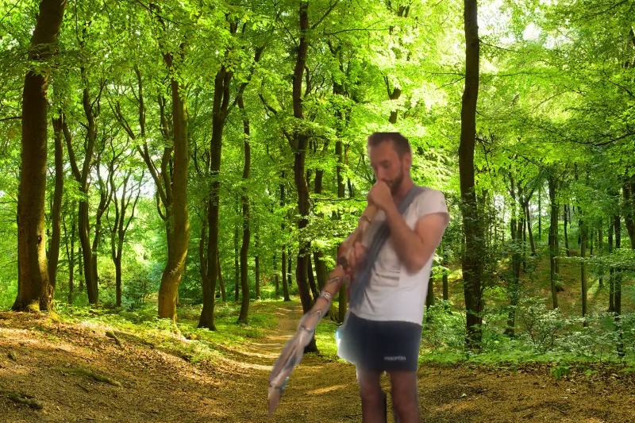

Du stehst am Waldeingang und wartest. Stolz tritt er aus den Bäumen hervor. Und präsentiert sein frisch selbst-geschnitztes Didgeridoo

“Här zu und späre, wie du in Einklang mit dir selbst kommen wirst”
Bevor Leo zum Spielen ansetzt, kannst du dich gerade noch so aufs Motorrad retten.
“Warte noch, wir mässen auch das Brettspiel spielen was ich auf das Didgeridoo geschnitzt habe.”, ruft er dir hinterher.
“Schnell weg hier, Vinz” - Du willst erstmal deine Ruhe vor Leo.
An welchem Ort wärdest du ihn am wenigsten erwarten?